사업 소개
수질 예측 시스템
데이터 가공
데이터 가공 API 다운로드
데이터 가공 프로그램 다운로드
KRF 바로가기
어노테이션/라벨링 가공
| 가공 분류 | 방법 | 내용 |
|---|---|---|
| 어노테이션 (공간매핑) |
GIS변환 | 주소정보와 일치하는 GIS좌표정보를 대입 |
| KRF매핑 | GIS좌표정보를 활용하여 KRF ID 및 DID 매핑 | |
| 학습데이터셋 생성 | 데이터조합 | 다수의 수질 및 오염원 데이터 내 다양한 측정항목 간의 수질오염 상관관계 분석 및 가중치 분석 등을 거쳐 인공지능학습모델에 적용 |
법정동 주소 데이터를 GIS(포인트)로 변환 가공
가공 대상
| 대상 여부 | 분류 | 내용 |
|---|---|---|
| 대상 | 녹조(조류)모니터링, 인구가구주택통계, 수리수문기상, 전국오염원, 기상자료AWS, 종관기상관측ASOS | 측정결과에 위/경도 값이 미존재하여 GIS 위치좌표 변환 가공 |
| 제외 | 수질측정망, 자동측정망, 퇴적물측정망, 방사성물질측정망, 비점오염물질측정망, 수질TMS, KRF | 측정결과에 기존 위/경도 값이 존재하여 대상에서 제외 |
가공 절차
가공 방법
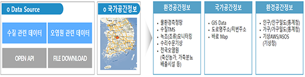
데이터 분석 및 GIS 관련정보 수집
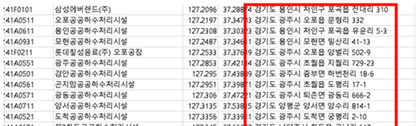
데이터 주소 정보 오류 확인
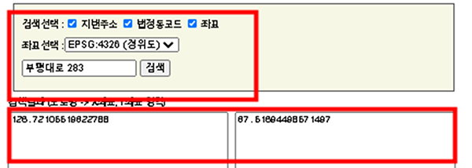
주소 데이터를 좌표로 변환
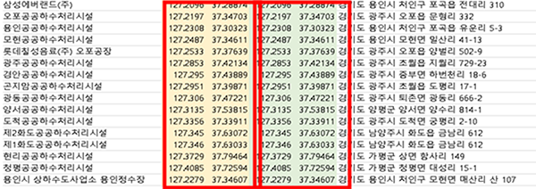
원본데이터 좌표와 변환 좌표를 비교 확인
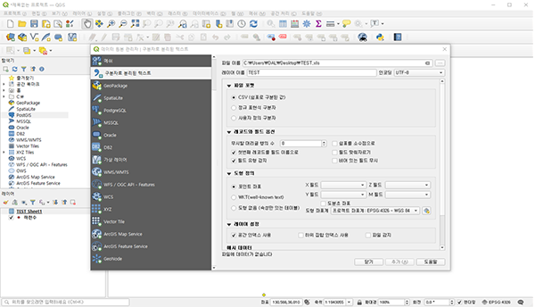
QGIS 레이어 추가 및 좌표계(EPSG:4326) 정의
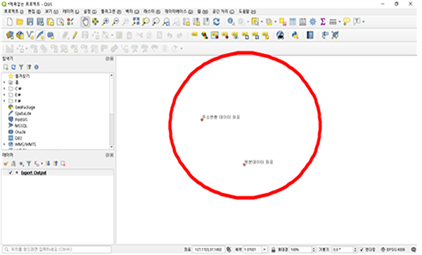
좌표 맵에 표출하여 공간데이터 비교 분석
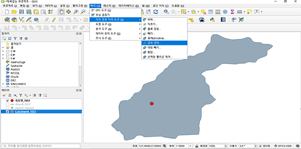
데이터와 KRF 집수구역 Intersect 공간매핑 작업

KRF 집수구역 코드로 리치라인 데이터 Join 처리
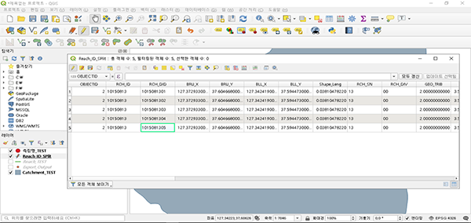
데이터와 KRF 집수구역 조인한 데이터 확인
데이터와 KRF 집수구역 조인한 데이터 확인
법정동 데이터를 GIS(면)로 변환 가공
가공 절차
가공 방법
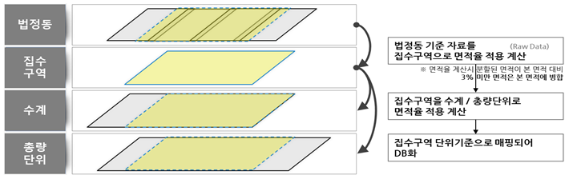< 오염원 데이터와 연속지적도 데이터 중첩(지적중첩 오염원 데이터) >
지적중첩 오염원 데이터와 집수구역 데이터 중첩
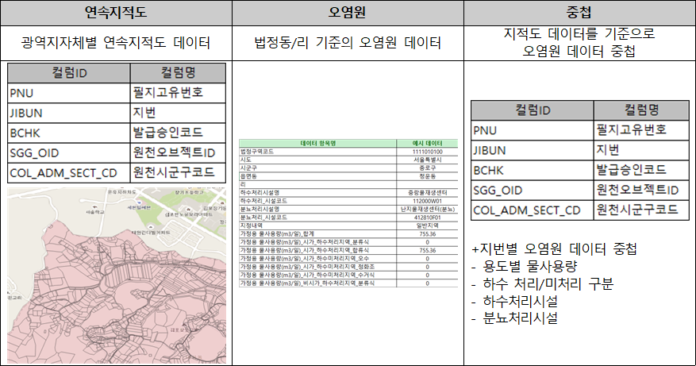 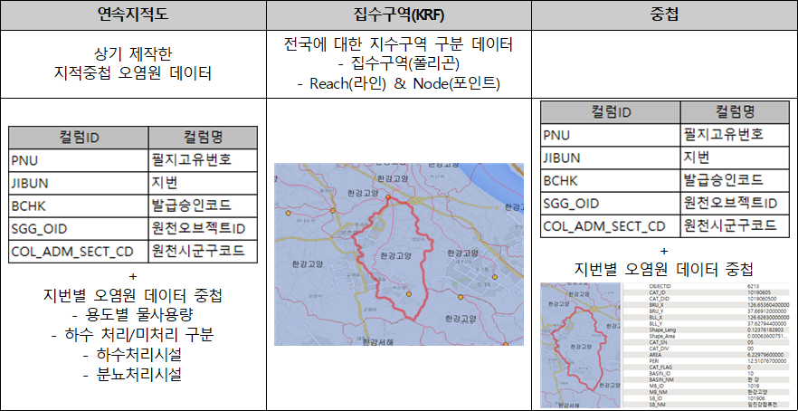GIS 데이터를 KRF 집수구역 매핑 변환 가공
집수구역 단위 영향지역 분석을 위한 GIS 데이터 KRF 매핑 데이터 구축
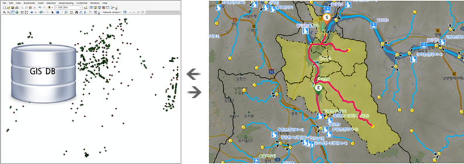GIS Layer 기반에 DB를 적용한 GIS 표준 데이터 SHP파일 구축
- 측정망 인스턴스별(수질측정망, 자동측정망, 총량측정망, 인구, 가구, 주택, 오염원 등)로 SHP파일을 별도로 구축
- 인스턴스별 SHP 파일은 수질(측정소ID, 측정소명, 위도, 경도, CAT ID, CAT DID), 인구/가구/주택(행정구역코드, CAT ID, CAT DID), 오염원(법정동코드, CAT ID, CAT DID) 기상(측정소ID, 측정소명, 위도, 경도, CAT ID, CAT DID)로 구성
정량한계 미만 및 결측데이터 가공
- 측정값 변환 : 원천데이터의 운영 기관별로 데이터 구축 과정 중 정량한계미만, 분석과정(검사)값, 결측에 대한 표시법이 존재하고 인공지능학습을 위한 학습데이터 가공 과정에서 이 대상에 속하는 측정값을 학습에 적합한 값으로 변환
- 인공지능 AI모델에서 원활한 학습을 위하여 정량한계미만으로 정의되는 값은 ’0‘으로 정제 처리 및 분석중(검사) 데이터는 ’null’, 기존 null로 측정값에 정의된 값은 ‘0’으로 변경 처리
| 구분 | 분류 | 데이터 정제 기준 |
|---|---|---|
| 물환경측정망 | 수질측정망 | 정량한계미만 :999999999 → 0분석중(검사):888888888→ null |
| 총량측정망 | 정량한계미만:999999999 → 0분석중(검사):888888888→ null | |
| 자동측정망 | 정량한계미만:-999 → 0 | |
| 퇴적물측정망 | 정량한계미만:999999999 → 0분석중(검사):888888888→ null | |
| 방사성물질측정망 | 정량한계미만:999999999 → 0분석중(검사):888888888→ null | |
| 비점오염물질측정망 | 해당없음 | |
| 녹조(조류)모니터링 | 정량한계미만:999999999 → 0분석중(검사):888888888→ null | |
| KRF | 해당없음 | |
| 수질TMS | 수질TMS | 해당없음 |
| 조사자료 | 인구가구주택통계 | 해당없음 |
| 수리수문기상 | 해당없음 | |
| 전국오염원 | 해당없음 | |
| 기상 | 기상자료AWS | 결측:-999 & -990 → null기존null→ 0 |
| 종관기상관측ASOS | 결측 :-999 & -990 → null기존null→ 0 |
어노테이션/라벨링 도구
GeoServer(지오서버)를 활용한 공간데이터 좌표 변환 및 집수구역 매핑 진행
GeoServer(지오서버)는 지리공간 데이터를 공유하고 편집할 수 있는 Java로 개발된 오픈 소스 GIS 소프트웨어
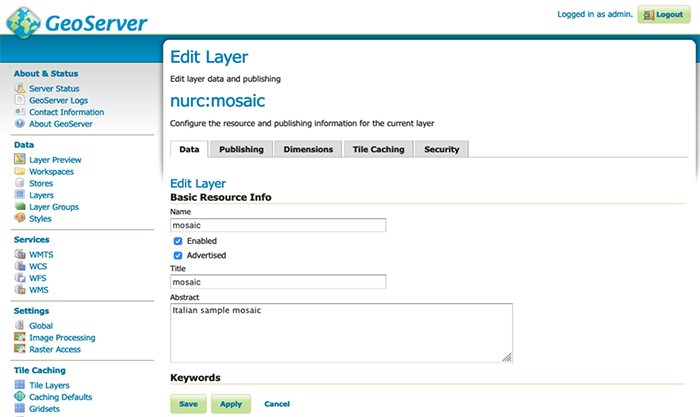
QGIS
- 오픈소스 데스크탑 GIS 소프트웨어
- 데이터 가시화 및 편집(도형 추가 및 삭제, 속성 데이터 관리
- 공간 데이터 중첩
- 공간 데이터 레이어 관리 및 도면 제작
PostgreSQL + PostGISS
- PostgreSQL :오픈소스 기반 RDBMS
- PostGIS : 공간데이터에 대한 처리, 공간퀄리 등을 수행하는 오픈소스 기반의 GIS DB 확장 소프트웨어
MariaDB
- 오픈 소스의 관계형 데이터베이스 관리 시스템(RDBMS)